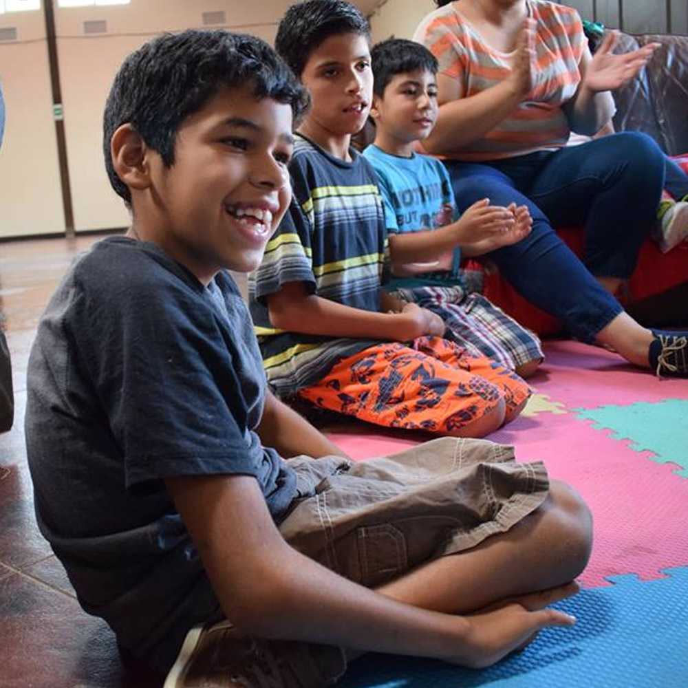
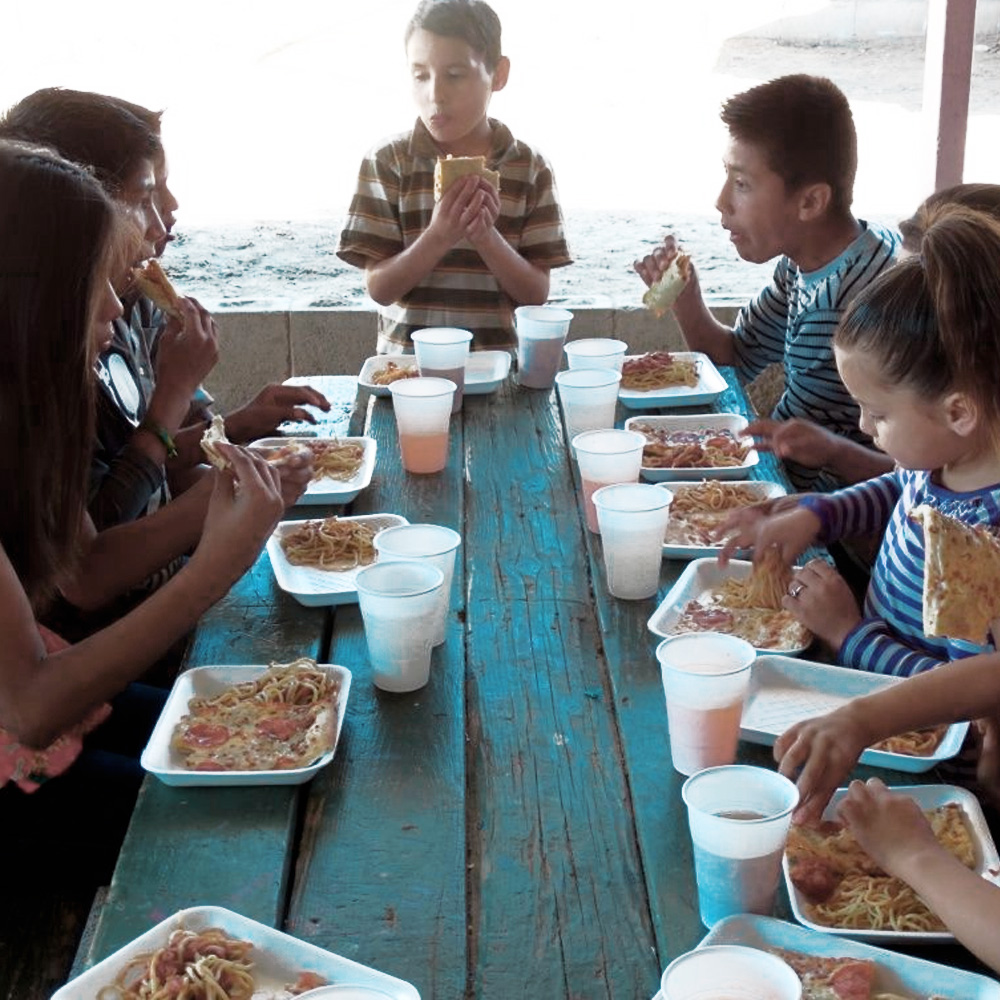
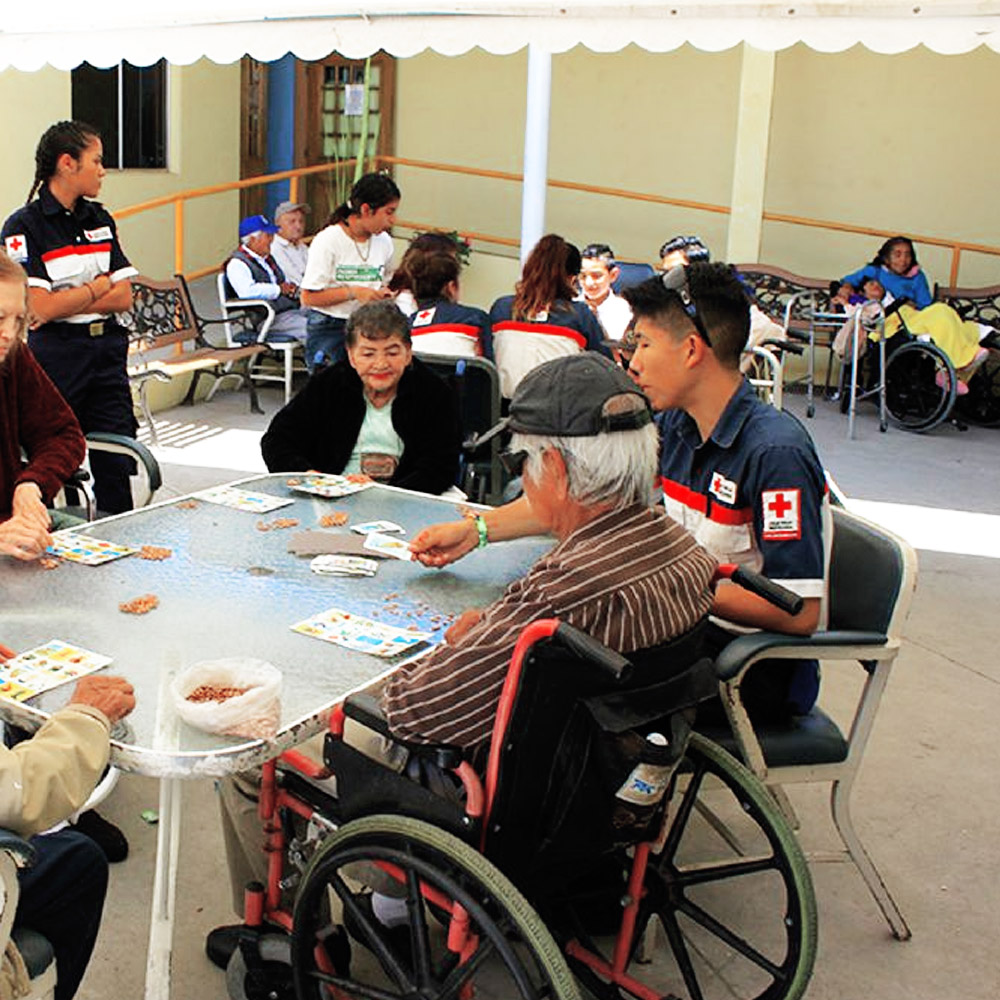
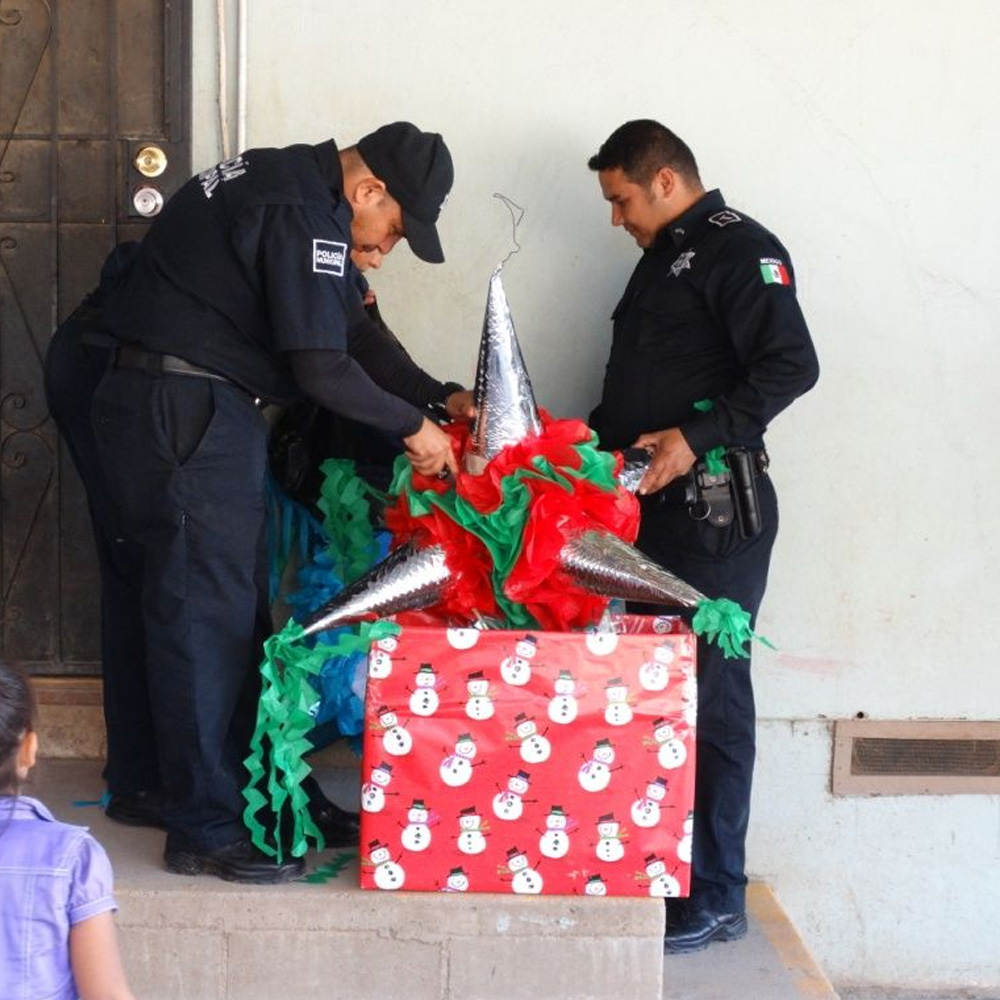
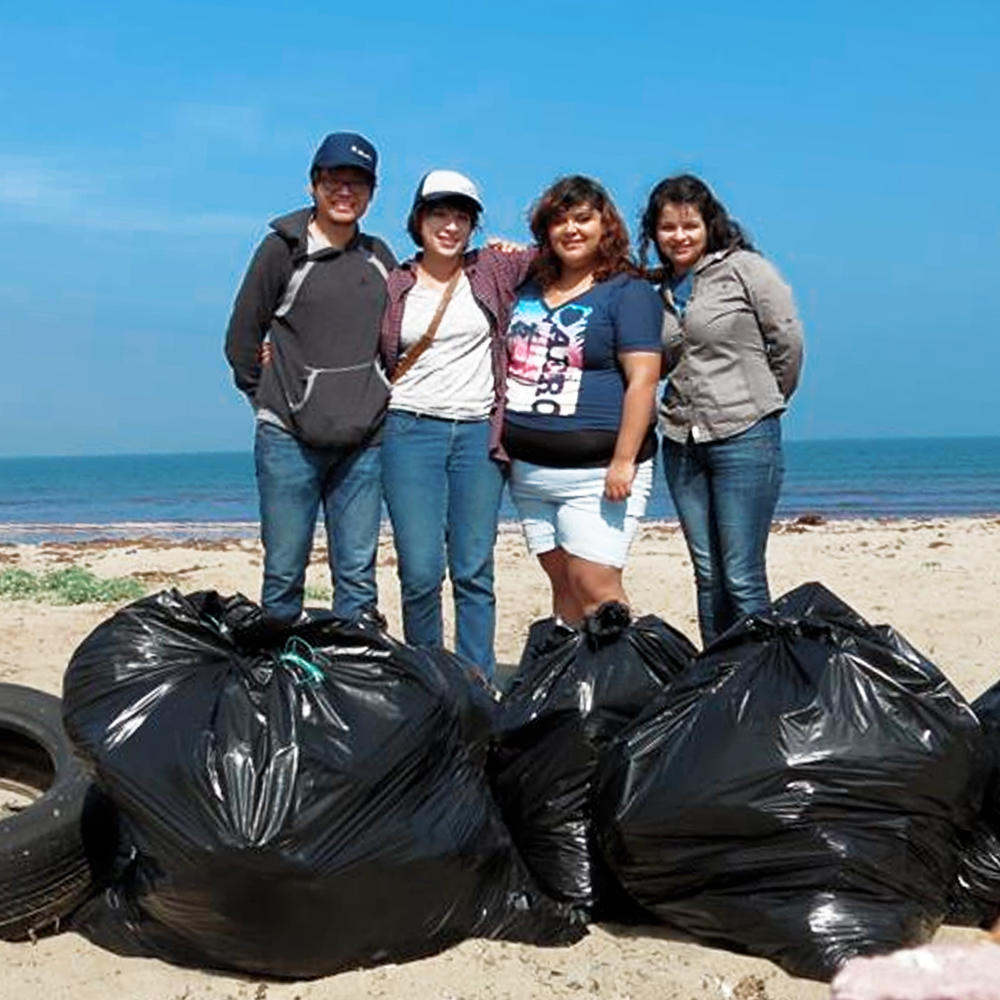
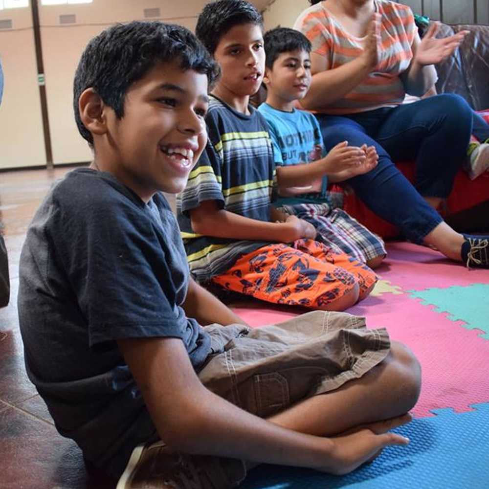
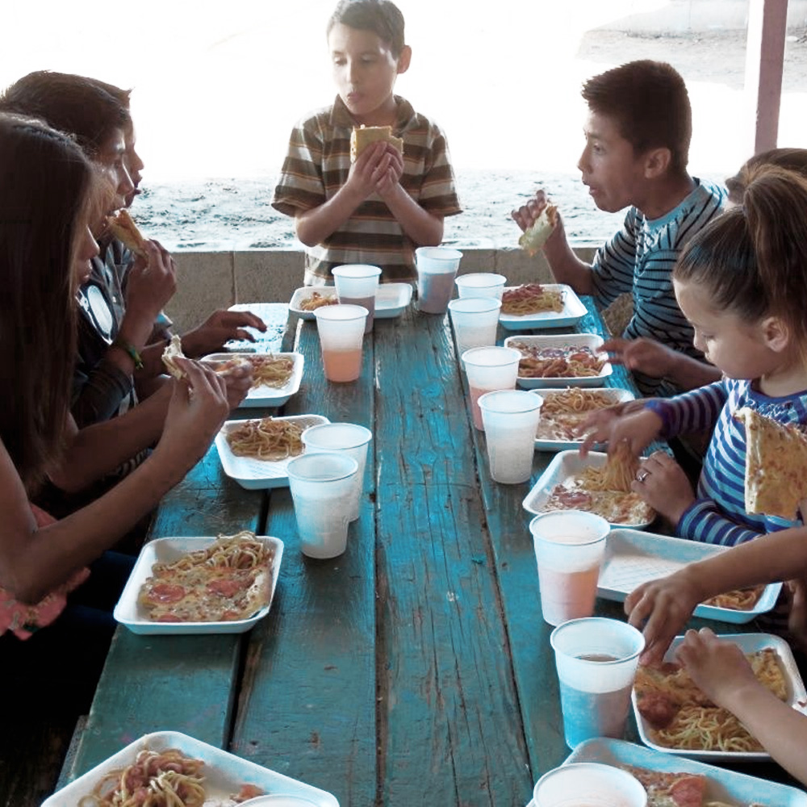
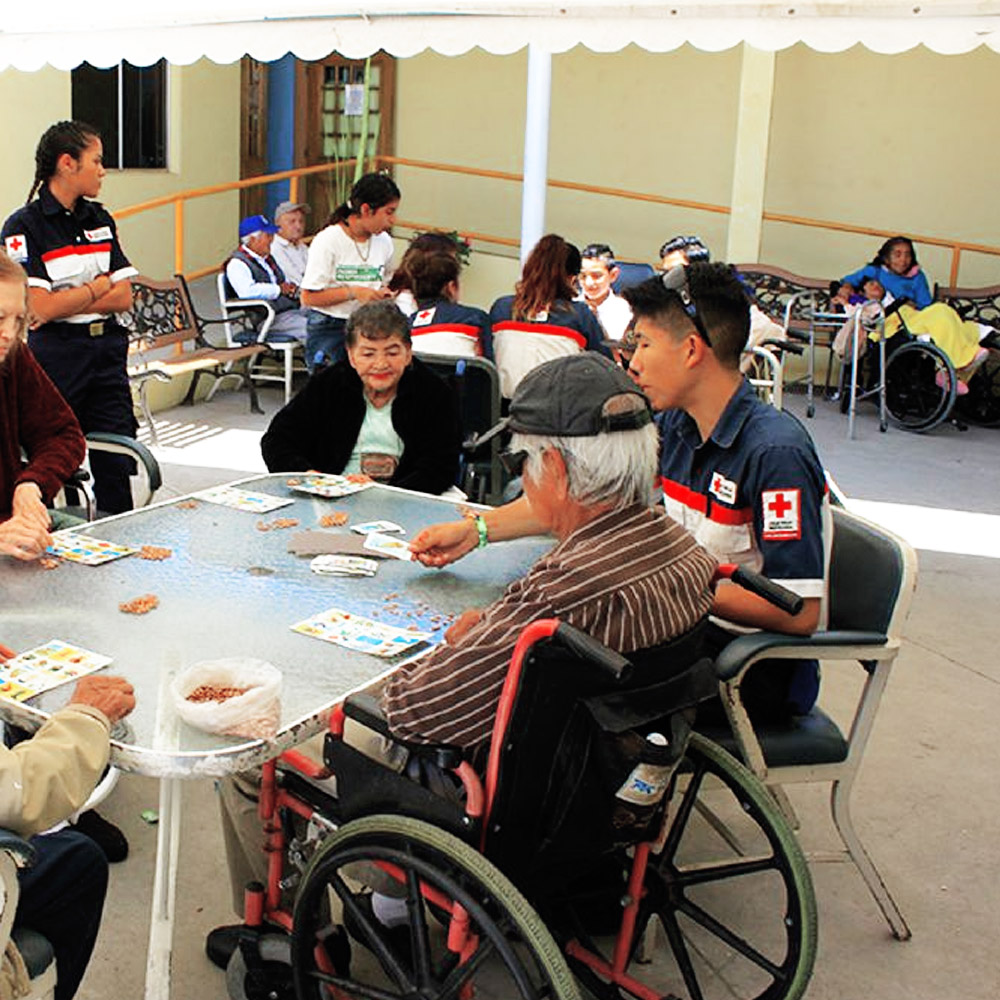
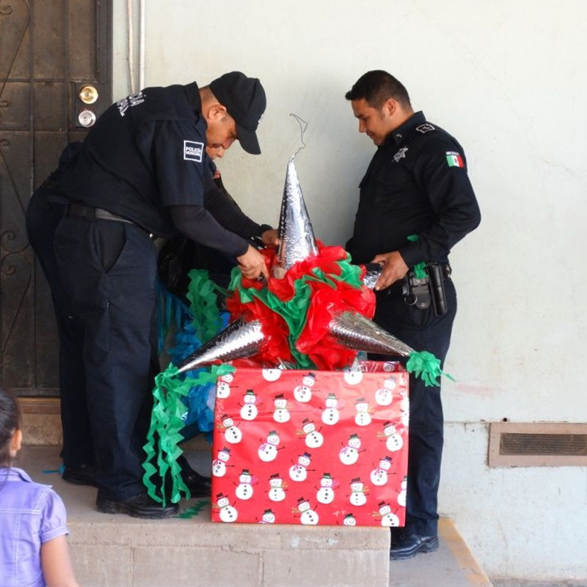
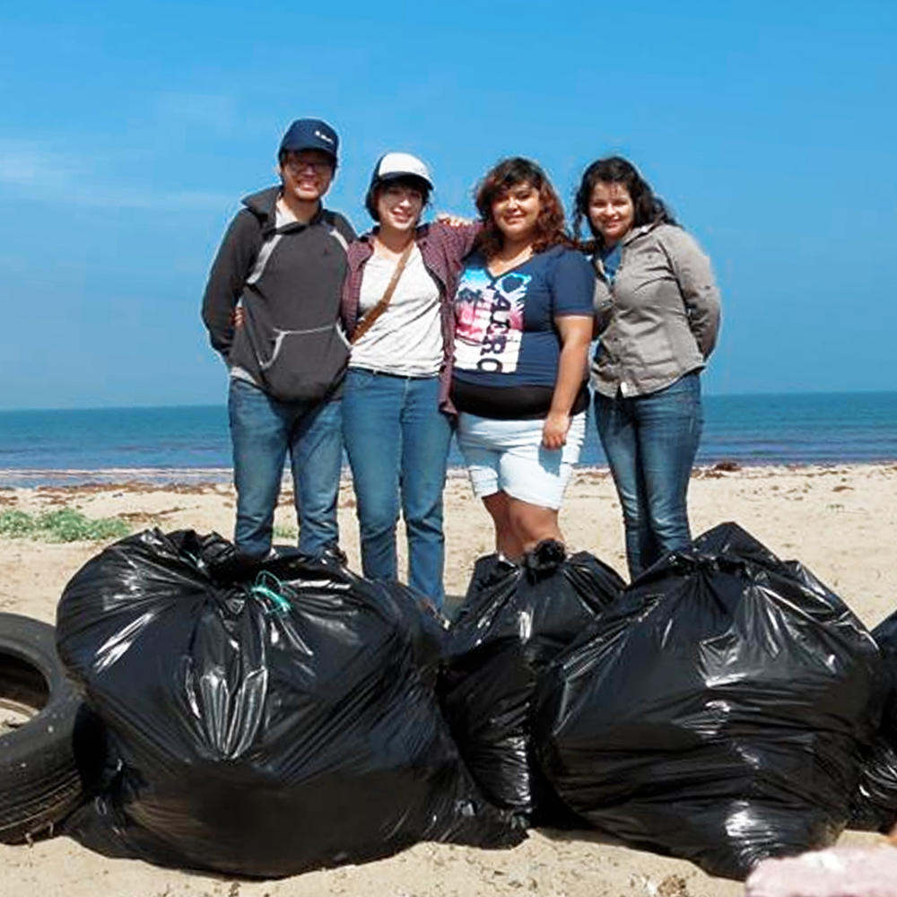

BIENVENIDA
¿Qué tal va todo? Cómo todo en la vida, siempre existen altas y bajas. Y en la ciudad de ENSENADA hay gente con necesidades que cubrir pero que se encuentran en una situación desfavorable. Pero algo que caracteriza a los ciudadanos de esta bella ciudad son sus ganas de ayudar. Por eso es que se ha creado el proyecto de PUNTO DE AYUDA, un sitio donde puedes encontrar los lugares en los cuales puedes donar en dinero o en especie. También es posible que tengas algo que ya no usas y que está en buen estado. Te invitamos a explorar el mapa en esta página haciendo clic en cada punto marcado y así puedas tener la información que necesitas.
El primer paso está a tan solo un click de distancia.
 








